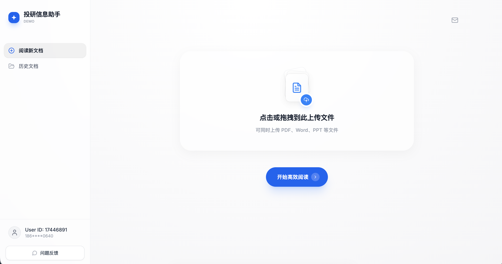
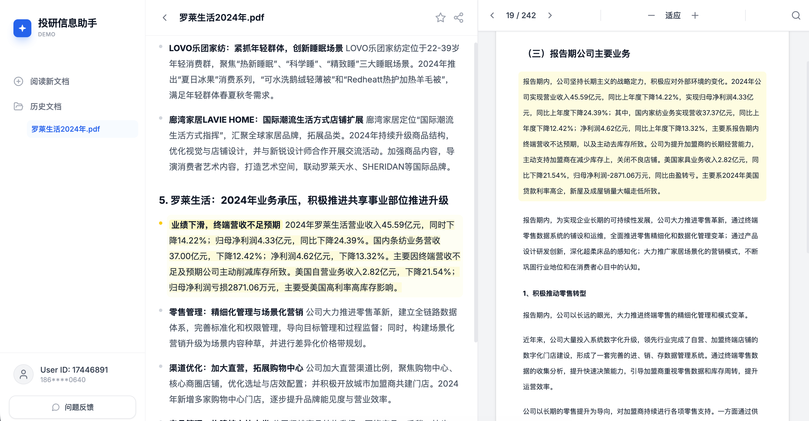

投研信息阅读助手
支持研报、年报、纪要等长文档解析，通过结构化分块、摘要生成与来源溯源，提升信息阅读效率。

信息原文呈现，海量资讯需逐条翻阅、自行标记重点。

自动提炼结构化摘要，要点、关联与变动一目了然。
📝 这是一个产品的 One Page 详情页占位。后续 Pompeii 会提供对应的 Markdown 文档，再往此处补充完整内容（项目背景、核心特性、工作流程、技术架构、数据成果、Roadmap 等）。